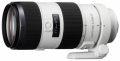

器材库 > 35mm画幅AF变焦镜头 > 70-200/2.8 G SSM II

详细规格
镜头类型
远摄变焦镜头
发布日期
2013-10-16
焦距
70mm-200mm
最大光圈
f/2.8
最小光圈
f/32
视角（对角）
全幅 34ﾟ-12.5° / APS-C 23ﾟ-8ﾟ
镜头结构
19片/16组
低/超低色散镜片
4片
光圈叶片
9片
最近对焦距离
120cm
最大放大倍率
0.21
驱动马达
SSM
滤镜口径
77mm
镜头卡口
Minolta/Konica-Minolta/Sony AF
防抖
否
颜色
黑色
尺寸
87×196.5mm
重量
（不含三脚架安装套环）1340g
附件
花瓣型遮光罩, 三脚架安装套环
该产品暂无存档的网友点评
产品图 / 样片
70-200/2.8 G SSM II
评测 / 相关文章
- ［资讯］全面点评索尼新品镜头 （存档）
- ［资讯］索尼秋季新品发布会现场集锦 （存档）
相关文章
- ［资讯］索尼70-200/2.8 G SSM II （存档）
- ［资讯］全面点评索尼新品镜头 （存档）
- ［资讯］索尼秋季新品发布会现场集锦 （存档）